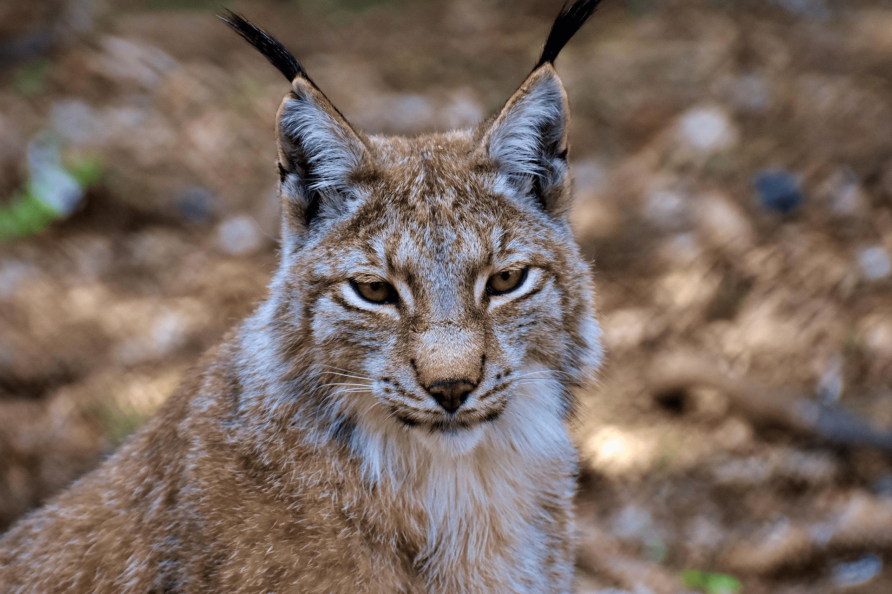
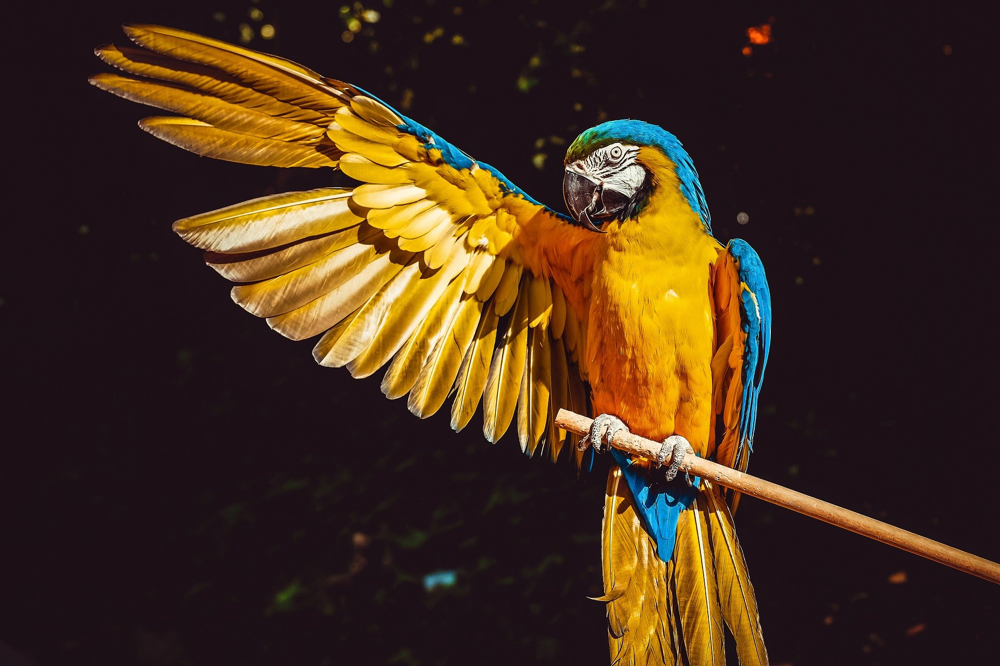

Descubre nuestros programas
¿Sabías que con cada visita nos ayudas a conservar más especies autóctonas? En Charnia nos esforzamos en cuidar y conservar especies en peligro de extinción.
Actividades educativas
Experiencias muy divertidas y en las que conocerás a los wallabys, las aves exóticas, o los delfines. Aprende de nuestros fantásticos animales y connecta con ellos durante las actividades educativas de Charnia.
